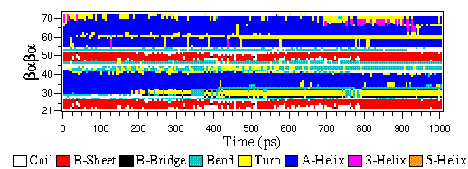
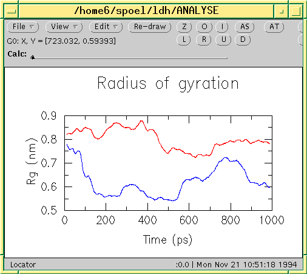

File formats¶
Summary of file formats¶
Parameter files¶
- mdp
run parameters, input for gmx grompp and gmx convert-tpr
- m2p
input for gmx xpm2ps
Structure files¶
Topology files¶
- top
system topology (ascii)
- itp
include topology (ascii)
- rtp
residue topology (ascii)
- ndx
index file (ascii)
- n2t
atom naming definition (ascii)
- atp
atom type library (ascii)
- r2b
residue to building block mapping (ascii)
- arn
atom renaming database (ascii)
- hdb
hydrogen atom database (ascii)
- vsd
virtual site database (ascii)
- tdb
termini database (ascii)
Run Input files¶
- tpr
system topology, parameters, coordinates and velocities (binary, portable)
Trajectory files¶
- tng
Any kind of data (compressed, portable, any precision)
- trr
x, v and f (binary, full precision, portable)
- xtc
x only (compressed, portable, any precision)
- gro
x and v (ascii, any precision)
- g96
x only (ascii, fixed high precision)
- pdb
x only (ascii, reduced precision)
- Formats for full-precision data:
- Generic trajectory formats:
Energy files¶
Other files¶
File format details¶
atp¶
The atp file contains general information about atom types, like the atom number and the mass in atomic mass units.
arn¶
The arn file allows the renaming of atoms from their force field names to the names as defined by IUPAC/PDB, to allow easier visualization and identification.
cpt¶
The cpt file extension stands for portable checkpoint file. The complete state of the simulation is stored in the checkpoint file, including extended thermostat/barostat variables, random number states and NMR time averaged data. With domain decomposition also the some decomposition setup information is stored.
See also gmx mdrun.
dat¶
Files with the dat file extension contain generic input or output. As it is not possible to categorize all data file formats, GROMACS has a generic file format called dat of which no format is given.
edi¶
Files with the edi file extension contain information for gmx mdrun to run Molecular Dynamics with Essential Dynamics constraints. It used to be possible to generate those through the options provided in the WHAT IF program.
edr¶
The edr file extension stands for portable energy file. The energies are stored using the xdr protocol.
See also gmx energy.
ene¶
The ene file extension stands for binary energy file. It holds the energies as generated during your gmx mdrun.
The file can be transformed to a portable energy file (portable across hardware platforms), the edr file using the program gmx eneconv.
See also gmx energy.
eps¶
The eps file format is not a special GROMACS format, but just a variant of the standard PostScript(tm). A sample eps file as generated by the gmx xpm2ps program is included below. It shows the secondary structure of a peptide as a function of time.

g96¶
A file with the g96 extension can be a GROMOS-96 initial/final configuration file or a coordinate trajectory file or a combination of both. The file is fixed format, all floats are written as 15.9 (files can get huge). GROMACS supports the following data blocks in the given order:
Header block:
TITLE(mandatory)Frame blocks:
TIMESTEP(optional)
POSITION/POSITIONRED(mandatory)
VELOCITY/VELOCITYRED(optional)
BOX(optional)
See the GROMOS-96 manual for a complete description of the blocks.
Note that all GROMACS programs can read compressed or g-zipped files.
gro¶
Files with the gro file extension contain a molecular structure in
Gromos87 format. gro files can be used as trajectory by simply
concatenating files. An attempt will be made to read a time value from
the title string in each frame, which should be preceded by
‘t=’, as in the sample below.
A sample piece is included below:
MD of 2 waters, t= 0.0
6
1WATER OW1 1 0.126 1.624 1.679 0.1227 -0.0580 0.0434
1WATER HW2 2 0.190 1.661 1.747 0.8085 0.3191 -0.7791
1WATER HW3 3 0.177 1.568 1.613 -0.9045 -2.6469 1.3180
2WATER OW1 4 1.275 0.053 0.622 0.2519 0.3140 -0.1734
2WATER HW2 5 1.337 0.002 0.680 -1.0641 -1.1349 0.0257
2WATER HW3 6 1.326 0.120 0.568 1.9427 -0.8216 -0.0244
1.82060 1.82060 1.82060
Lines contain the following information (top to bottom):
title string (free format string, optional time in ps after ‘
t=’)number of atoms (free format integer)
one line for each atom (fixed format, see below)
box vectors (free format, space separated reals), values: v1(x) v2(y) v3(z) v1(y) v1(z) v2(x) v2(z) v3(x) v3(y), the last 6 values may be omitted (they will be set to zero). GROMACS only supports boxes with v1(y)=v1(z)=v2(z)=0.
This format is fixed, ie. all columns are in a fixed
position. Optionally (for now only yet with trjconv) you can write gro
files with any number of decimal places, the format will then be
n+5 positions with n decimal places (n+1
for velocities) in stead of 8 with 3 (with
4 for velocities). Upon reading, the precision will be
inferred from the distance between the decimal points (which will be
n+5). Columns contain the following information (from left to
right):
residue number (5 positions, integer)
residue name (5 characters)
atom name (5 characters)
atom number (5 positions, integer)
position (in nm, x y z in 3 columns, each 8 positions with 3 decimal places)
velocity (in nm/ps (or km/s), x y z in 3 columns, each 8 positions with 4 decimal places)
Note that separate molecules or ions (e.g. water or Cl-) are regarded as residues. If you want to write such a file in your own program without using the GROMACS libraries you can use the following formats:
- C format
"%5d%-5s%5s%5d%8.3f%8.3f%8.3f%8.4f%8.4f%8.4f"- Fortran format
(i5,2a5,i5,3f8.3,3f8.4)- Pascal format
This is left as an exercise for the user
Note that this is the format for writing, as in the above example fields may be written without spaces, and therefore can not be read with the same format statement in C.
hdb¶
The hdb file extension stands for hydrogen database
Such a file is needed by gmx pdb2gmx
when building hydrogen atoms that were either originally missing, or that
were removed with -ignh.
itp¶
The itp file extension stands for include topology. These files are included in topology files (with the top extension).
log¶
Logfiles are generated by some GROMACS programs and are usually in
human-readable format. Use more logfile.
m2p¶
The m2p file format contains input options for the gmx xpm2ps program. All of these options are very easy to comprehend when you look at the PostScript(tm) output from gmx xpm2ps.
; Command line options of xpm2ps override the parameters in this file
black&white = no ; Obsolete
titlefont = Times-Roman ; A PostScript Font
titlefontsize = 20 ; Font size (pt)
legend = yes ; Show the legend
legendfont = Times-Roman ; A PostScript Font
legendlabel = ; Used when there is none in the .xpm
legend2label = ; Used when merging two xpm's
legendfontsize = 14 ; Font size (pt)
xbox = 2.0 ; x-size of a matrix element
ybox = 2.0 ; y-size of a matrix element
matrixspacing = 20.0 ; Space between 2 matrices
xoffset = 0.0 ; Between matrix and bounding box
yoffset = 0.0 ; Between matrix and bounding box
x-major = 20 ; Major ticks on x axis every .. frames
x-minor = 5 ; Id. Minor ticks
x-firstmajor = 0 ; First frame for major tick
x-majorat0 = no ; Major tick at first frame
x-majorticklen = 8.0 ; x-majorticklength
x-minorticklen = 4.0 ; x-minorticklength
x-label = ; Used when there is none in the .xpm
x-fontsize = 16 ; Font size (pt)
x-font = Times-Roman ; A PostScript Font
x-tickfontsize = 10 ; Font size (pt)
x-tickfont = Helvetica ; A PostScript Font
y-major = 20
y-minor = 5
y-firstmajor = 0
y-majorat0 = no
y-majorticklen = 8.0
y-minorticklen = 4.0
y-label =
y-fontsize = 16
y-font = Times-Roman
y-tickfontsize = 10
y-tickfont = Helvetica
mdp¶
See the user guide for a detailed description of the options.
Below is a sample mdp file. The ordering of the items is not important, but if you enter the same thing twice, the last is used (gmx grompp gives you a note when overriding values). Dashes and underscores on the left hand side are ignored.
The values of the options are values for a 1 nanosecond MD run of a protein in a box of water.
Note: The parameters chosen (e.g., short-range cutoffs) depend on the force field being used.
integrator = md
dt = 0.002
nsteps = 500000
nstlog = 5000
nstenergy = 5000
nstxout-compressed = 5000
continuation = yes
constraints = all-bonds
constraint-algorithm = lincs
cutoff-scheme = Verlet
coulombtype = PME
rcoulomb = 1.0
vdwtype = Cut-off
rvdw = 1.0
DispCorr = EnerPres
tcoupl = V-rescale
tc-grps = Protein SOL
tau-t = 0.1 0.1
ref-t = 300 300
pcoupl = Parrinello-Rahman
tau-p = 2.0
compressibility = 4.5e-5
ref-p = 1.0
With this input gmx grompp will produce a commented file with the default name
mdout.mdp. That file will contain the above options, as well as all other
options not explicitly set, showing their default values.
The mdp sample above was generated using mdpeditor. That tool can help generating mdp files according to best practices based on simple instructions.
mtx¶
Files with the mtx file extension contain a matrix. The file format is identical to the trr format. Currently this file format is only used for hessian matrices, which are produced with gmx mdrun and read by gmx nmeig.
ndx¶
The GROMACS index file (usually called index.ndx) contains some user definable sets of atoms. The file can be read by most analysis programs and by the preprocessor (gmx grompp). Most of these programs create default index groups when no index file is supplied, so you only need to make an index file when you need special groups.
First the group name is written between square brackets. The following atom numbers may be spread out over as many lines as you like. The atom numbering starts at 1.
An example file is here:
[ Oxygen ]
1 4 7
[ Hydrogen ]
2 3 5 6
8 9
There are two groups, and total nine atoms. The first group Oxygen has 3 elements. The second group Hydrogen has 6 elements.
An index file generation tool is available: gmx make_ndx.
n2t¶
This GROMACS file can be used to perform primitive translations between atom names found in structure files and the corresponding atom types. This is mostly useful for using utilities such as gmx x2top, but users should be aware that the knowledge in this file is extremely limited.
An example file (share/top/gromos53a5.ff/atomname2type.n2t) is here:
H H 0.408 1.008 1 O 0.1
O OA -0.674 15.9994 2 C 0.14 H 0.1
C CH3 0.000 15.035 1 C 0.15
C CH0 0.266 12.011 4 C 0.15 C 0.15 C 0.15 O 0.14
A short description of the file format follows:
Column 1: Elemental symbol of the atom/first character in the atom name.
Column 2: The atom type to be assigned.
Column 3: The charge to be assigned.
Column 4: The mass of the atom.
Column 5: The number N of other atoms to which this atom is bonded. The number of fields that follow are related to this number; for each atom, an elemental symbol and the reference distance for its bond length.
Columns 6-onward: The elemental symbols and reference bond lengths for N connections (column 5) to the atom being assigned parameters (column 1). The reference bond lengths have a tolerance of +/- 10% from the value specified in this file. Any bond outside this tolerance will not be recognized as being connected to the atom being assigned parameters.
out¶
Files with the out file extension contain generic output. As it is not possible to categorize all data file formats, GROMACS has a generic file format called out of which no format is given.
pdb¶
Files with the pdb extension are molecular structure files in the protein databank file format. The protein databank file format describes the positions of atoms in a molecular structure. Coordinates are read from the ATOM and HETATM records, until the file ends or an ENDMDL record is encountered. GROMACS programs can read and write a simulation box in the CRYST1 entry. The pdb format can also be used as a trajectory format: several structures, separated by ENDMDL, can be read from or written to one file.
Example¶
A pdb file should look like this:
ATOM 1 H1 LYS 1 14.260 6.590 34.480 1.00 0.00
ATOM 2 H2 LYS 1 13.760 5.000 34.340 1.00 0.00
ATOM 3 N LYS 1 14.090 5.850 33.800 1.00 0.00
ATOM 4 H3 LYS 1 14.920 5.560 33.270 1.00 0.00
...
...
rtp¶
The rtp file extension stands for residue topology. Such a file is needed by gmx pdb2gmx to make a GROMACS topology for a protein contained in a pdb file. The file contains the default interaction type for the 4 bonded interactions and residue entries, which consist of atoms and optionally bonds, angles dihedrals and impropers. Parameters can be added to bonds, angles, dihedrals and impropers, these parameters override the standard parameters in the itp files. This should only be used in special cases. Instead of parameters a string can be added for each bonded interaction, the string is copied to the top file, this is used for the GROMOS96 forcefield.
gmx pdb2gmx automatically generates all angles,
this means that the [angles] field is only
useful for overriding itp parameters.
gmx pdb2gmx automatically generates one proper
dihedral for every rotatable bond, preferably on heavy atoms.
When the [dihedrals] field is used, no other dihedrals will
be generated for the bonds corresponding to the specified dihedrals.
It is possible to put more than one dihedral on a rotatable bond.
gmx pdb2gmx sets the number exclusions to 3, which
means that interactions between atoms connected by at most 3 bonds are
excluded. Pair interactions are generated for all pairs of atoms which are
separated by 3 bonds (except pairs of hydrogens).
When more interactions need to be excluded, or some pair interactions should
not be generated, an [exclusions] field can be added, followed by
pairs of atom names on separate lines. All non-bonded and pair interactions
between these atoms will be excluded.
A sample is included below.
[ bondedtypes ] ; mandatory
; bonds angles dihedrals impropers
1 1 1 2 ; mandatory
[ GLY ] ; mandatory
[ atoms ] ; mandatory
; name type charge chargegroup
N N -0.280 0
H H 0.280 0
CA CH2 0.000 1
C C 0.380 2
O O -0.380 2
[ bonds ] ; optional
;atom1 atom2 b0 kb
N H
N CA
CA C
C O
-C N
[ exclusions ] ; optional
;atom1 atom2
[ angles ] ; optional
;atom1 atom2 atom3 th0 cth
[ dihedrals ] ; optional
;atom1 atom2 atom3 atom4 phi0 cp mult
[ impropers ] ; optional
;atom1 atom2 atom3 atom4 q0 cq
N -C CA H
-C -CA N -O
[ ZN ]
[ atoms ]
ZN ZN 2.000 0
r2b¶
The r2b file translates the residue names for residues that have different names in different force fields, or have different names depending on their protonation states.
tdb¶
tdb files contain the information about amino acid termini that can be placed at the end of a polypeptide chain.
tex¶
We use LaTeX for document processing. Although the input is not so user friendly, it has some advantages over word processors.
LaTeX knows a lot about formatting, probably much more than you.
The input is clear, you always know what you are doing
It makes anything from letters to a thesis
Much more…
tng¶
Files with the .tng file extension can contain all kinds of data
related to the trajectory of a simulation. For example, it might
contain coordinates, velocities, forces and/or energies. Various mdp
file options control which of these are written by gmx mdrun, whether data
is written with compression, and how lossy that compression can be.
This file is in portable binary format and can be read with gmx dump.
gmx dump -f traj.tng
or if you’re not such a fast reader:
gmx dump -f traj.tng | less
You can also get a quick look in the contents of the file (number of frames etc.) using:
gmx check -f traj.tng
top¶
The top file extension stands for topology. It is an ascii file which is read by gmx grompp which processes it and creates a binary topology (tpr file).
A sample file is included below:
;
; Example topology file
;
[ defaults ]
; nbfunc comb-rule gen-pairs fudgeLJ fudgeQQ
1 1 no 1.0 1.0
; The force field files to be included
#include "rt41c5.itp"
[ moleculetype ]
; name nrexcl
Urea 3
[ atoms ]
; nr type resnr residu atom cgnr charge
1 C 1 UREA C1 1 0.683
2 O 1 UREA O2 1 -0.683
3 NT 1 UREA N3 2 -0.622
4 H 1 UREA H4 2 0.346
5 H 1 UREA H5 2 0.276
6 NT 1 UREA N6 3 -0.622
7 H 1 UREA H7 3 0.346
8 H 1 UREA H8 3 0.276
[ bonds ]
; ai aj funct c0 c1
3 4 1 1.000000e-01 3.744680e+05
3 5 1 1.000000e-01 3.744680e+05
6 7 1 1.000000e-01 3.744680e+05
6 8 1 1.000000e-01 3.744680e+05
1 2 1 1.230000e-01 5.020800e+05
1 3 1 1.330000e-01 3.765600e+05
1 6 1 1.330000e-01 3.765600e+05
[ pairs ]
; ai aj funct c0 c1
2 4 1 0.000000e+00 0.000000e+00
2 5 1 0.000000e+00 0.000000e+00
2 7 1 0.000000e+00 0.000000e+00
2 8 1 0.000000e+00 0.000000e+00
3 7 1 0.000000e+00 0.000000e+00
3 8 1 0.000000e+00 0.000000e+00
4 6 1 0.000000e+00 0.000000e+00
5 6 1 0.000000e+00 0.000000e+00
[ angles ]
; ai aj ak funct c0 c1
1 3 4 1 1.200000e+02 2.928800e+02
1 3 5 1 1.200000e+02 2.928800e+02
4 3 5 1 1.200000e+02 3.347200e+02
1 6 7 1 1.200000e+02 2.928800e+02
1 6 8 1 1.200000e+02 2.928800e+02
7 6 8 1 1.200000e+02 3.347200e+02
2 1 3 1 1.215000e+02 5.020800e+02
2 1 6 1 1.215000e+02 5.020800e+02
3 1 6 1 1.170000e+02 5.020800e+02
[ dihedrals ]
; ai aj ak al funct c0 c1 c2
2 1 3 4 1 1.800000e+02 3.347200e+01 2.000000e+00
6 1 3 4 1 1.800000e+02 3.347200e+01 2.000000e+00
2 1 3 5 1 1.800000e+02 3.347200e+01 2.000000e+00
6 1 3 5 1 1.800000e+02 3.347200e+01 2.000000e+00
2 1 6 7 1 1.800000e+02 3.347200e+01 2.000000e+00
3 1 6 7 1 1.800000e+02 3.347200e+01 2.000000e+00
2 1 6 8 1 1.800000e+02 3.347200e+01 2.000000e+00
3 1 6 8 1 1.800000e+02 3.347200e+01 2.000000e+00
[ dihedrals ]
; ai aj ak al funct c0 c1
3 4 5 1 2 0.000000e+00 1.673600e+02
6 7 8 1 2 0.000000e+00 1.673600e+02
1 3 6 2 2 0.000000e+00 1.673600e+02
; Include SPC water topology
#include "spc.itp"
[ system ]
Urea in Water
[ molecules ]
Urea 1
SOL 1000
tpr¶
The tpr file extension stands for portable binary run input file. This file contains the starting structure of your simulation, the molecular topology and all the simulation parameters. Because this file is in binary format it cannot be read with a normal editor. To read a portable binary run input file type:
gmx dump -s topol.tpr
or if you’re not such a fast reader:
gmx dump -s topol.tpr | less
You can also compare two tpr files using:
gmx check -s1 top1 -s2 top2 | less
trr¶
Files with the trr file extension contain the trajectory of a simulation. In this file all the coordinates, velocities, forces and energies are printed as you told GROMACS in your mdp file. This file is in portable binary format and can be read with gmx dump:
gmx dump -f traj.trr
or if you’re not such a fast reader:
gmx dump -f traj.trr | less
You can also get a quick look in the contents of the file (number of frames etc.) using:
% gmx check -f traj.trr
vsd¶
The vsd file contains the information on how to place virtual sites on a number of different molecules in a force field.
xdr¶
GROMACS uses the XDR file format to store things like coordinate files internally.
xpm¶
The GROMACS xpm file format is compatible with the XPixMap format and is used for storing matrix data. Thus GROMACS xpm files can be viewed directly with programs like XV. Alternatively, they can be imported into GIMP and scaled to 300 DPI, using strong antialiasing for font and graphics. The first matrix data line in an xpm file corresponds to the last matrix row. In addition to the XPixMap format, GROMACS xpm files may contain extra fields. The information in these fields is used when converting an xpm file to EPS with gmx xpm2ps. The optional extra field are:
Before the
gv_xpmdeclaration:title,legend,x-label,y-labelandtype, all followed by a string. Thelegendfield determines the legend title. Thetypefield must be followed by"continuous"or"discrete", this determines which type of legend will be drawn in an EPS file, the default type is continuous.The xpm colormap entries may be followed by a string, which is a label for that color.
Between the colormap and the matrix data, the fields
x-axisand/ory-axismay be present followed by the tick-marks for that axis.
The example GROMACS xpm file below contains all the extra fields. The C-comment delimiters and the colon in the extra fields are optional.
/* XPM */
/* This matrix is generated by gmx rms. */
/* title: "Backbone RMSD matrix" */
/* legend: "RMSD (nm)" */
/* x-label: "Time (ps)" */
/* y-label: "Time (ps)" */
/* type: "Continuous" */
static char * gv_xpm[] = {
"13 13 6 1",
"A c #FFFFFF " /* "0" */,
"B c #CCCCCC " /* "0.0399" */,
"C c #999999 " /* "0.0798" */,
"D c #666666 " /* "0.12" */,
"E c #333333 " /* "0.16" */,
"F c #000000 " /* "0.2" */,
/* x-axis: 0 40 80 120 160 200 240 280 320 360 400 440 480 */
/* y-axis: 0 40 80 120 160 200 240 280 320 360 400 440 480 */
"FEDDDDCCCCCBA",
"FEDDDCCCCBBAB",
"FEDDDCCCCBABC",
"FDDDDCCCCABBC",
"EDDCCCCBACCCC",
"EDCCCCBABCCCC",
"EDCCCBABCCCCC",
"EDCCBABCCCCCD",
"EDCCABCCCDDDD",
"ECCACCCCCDDDD",
"ECACCCCCDDDDD",
"DACCDDDDDDEEE",
"ADEEEEEEEFFFF"
xtc¶
The xtc format is a portable format for trajectories. It uses the xdr routines for writing and reading data which was created for the Unix NFS system. The trajectories are written using a reduced precision algorithm which works in the following way: the coordinates (in nm) are multiplied by a scale factor, typically 1000, so that you have coordinates in pm. These are rounded to integer values. Then several other tricks are performed, for instance making use of the fact that atoms close in sequence are usually close in space too (e.g. a water molecule). To this end, the xdr library is extended with a special routine to write 3-D float coordinates. The routine was originally written by Frans van Hoesel as part of an Europort project. An updated version of it can be obtained through this link.
All the data is stored using calls to xdr routines.
- int magic
A magic number, for the current file version its value is 1995.
- int natoms
The number of atoms in the trajectory.
- int step
The simulation step.
- float time
The simulation time.
- float box[3][3]
The computational box which is stored as a set of three basis vectors, to allow for triclinic PBC. For a rectangular box the box edges are stored on the diagonal of the matrix.
- 3dfcoord x[natoms]
The coordinates themselves stored in reduced precision. Please note that when the number of atoms is smaller than 9 no reduced precision is used.
Using xtc in your C++ programs¶
It is possible to write your own analysis tools to take advantage
of the compressed .xtc format files: see the
template.cpp file in the
share/gromacs/template directory of your installation
for an example and
https://manual.gromacs.org/current/doxygen/html-full/page_analysistemplate.xhtml
for documentation.
To read and write xtc files the following routines are available via xtcio.h:
/* All functions return 1 if successful, 0 otherwise */
struct t_fileio* open_xtc(const char* filename, const char* mode);
/* Open a file for xdr I/O */
void close_xtc(struct t_fileio* fio);
/* Close the file for xdr I/O */
int read_first_xtc(struct t_fileio* fio,
int* natoms,
int64_t* step,
real* time,
matrix box,
rvec** x,
real* prec,
gmx_bool* bOK);
/* Open xtc file, read xtc file first time, allocate memory for x */
int read_next_xtc(struct t_fileio* fio, int natoms, int64_t* step, real* time, matrix box, rvec* x, real* prec, gmx_bool* bOK);
/* Read subsequent frames */
int write_xtc(struct t_fileio* fio, int natoms, int64_t step, real time, const rvec* box, const rvec* x, real prec);
/* Write a frame to xtc file */
To use the library function include "gromacs/fileio/xtcio.h"
in your file and link with -lgromacs.
xvg¶
Almost all output from GROMACS analysis tools is ready as input for Grace, formerly known as Xmgr. We use Grace, because it is very flexible, and it is also free software. It produces PostScript(tm) output, which is very suitable for inclusion in eg. LaTeX documents, but also for other word processors.
A sample Grace session with GROMACS data is shown below:
